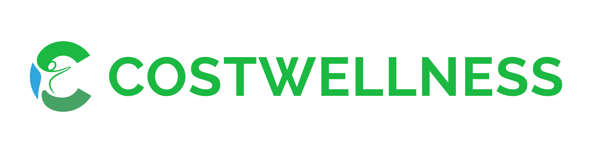
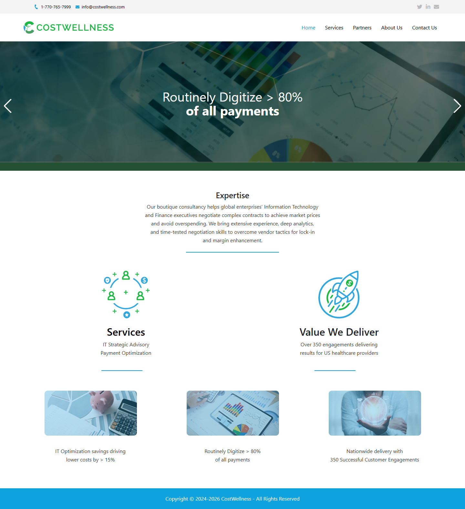
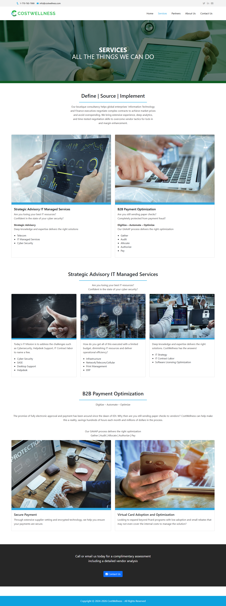
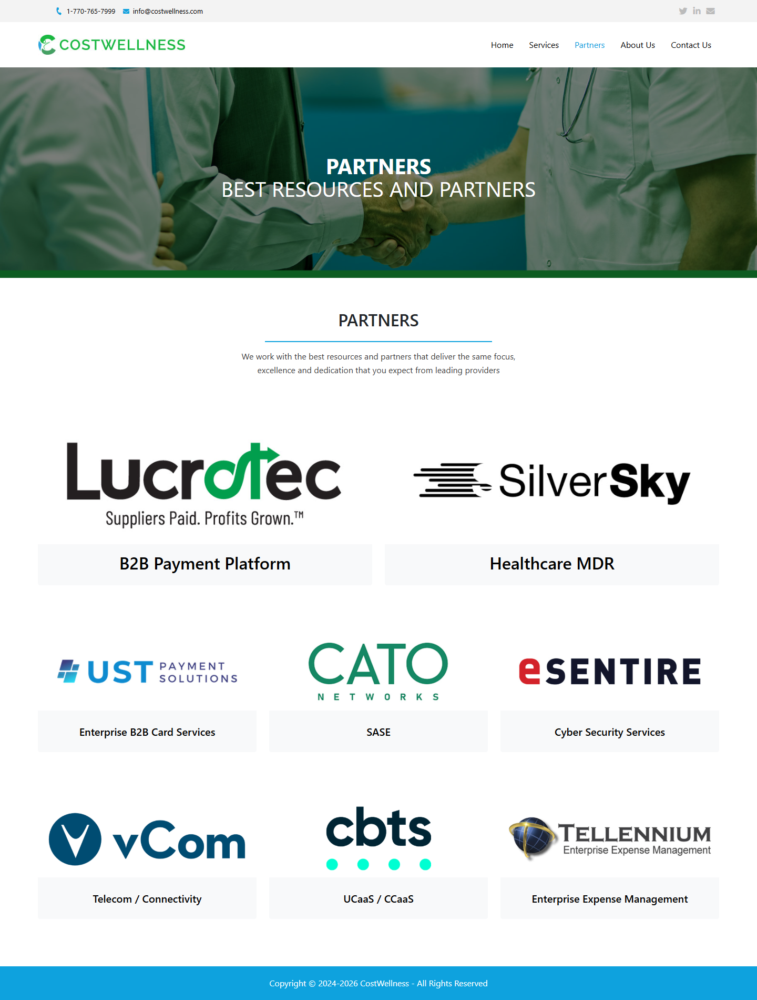
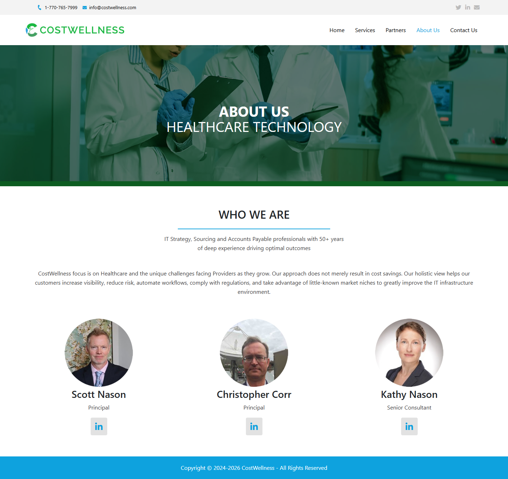
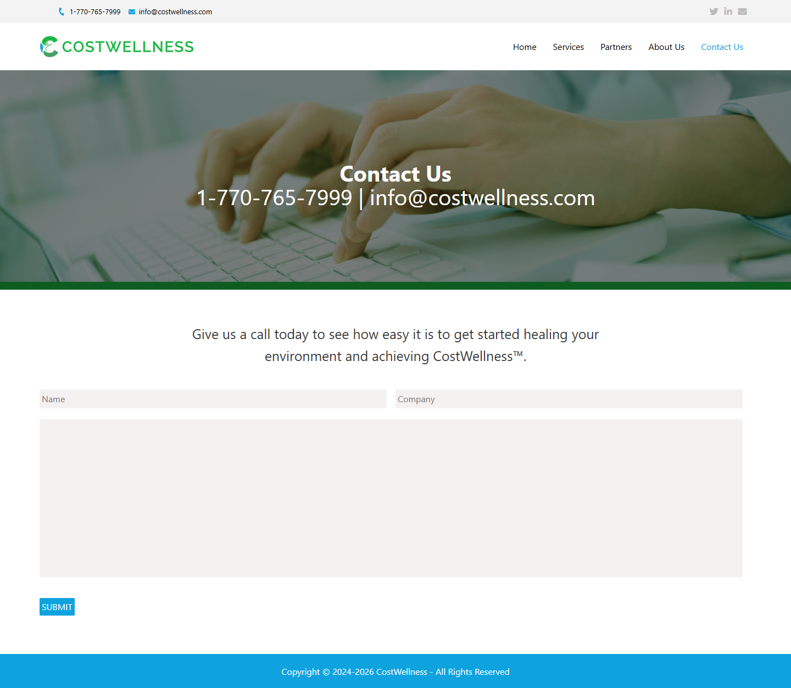
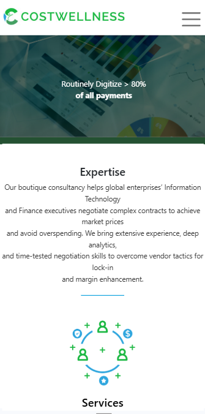

03 — Case Study
Costwellness
Brand Identity & Business Website
Designed and developed a complete brand identity and WordPress website for a healthcare technology consulting company, creating a professional digital presence that communicates its services, partnerships, and industry expertise.

Overview
Brand Identity & Business Website
CostWellness is a healthcare technology consulting company providing digital transformation, managed IT services, payment optimization, and cybersecurity solutions for healthcare organizations. I was responsible for designing the company's visual identity and developing its WordPress website from concept through deployment. The project included logo design, responsive website development, hosting configuration, deployment, and post-launch maintenance.
Project Facts
- Industry: Healthcare Technology Consulting
- Timeline: Approximately 1 month
- Role: Logo Designer & WordPress Developer
- Platform: WordPress
- Communication: Email
- Status: Live
Responsibilities
- Logo Design & Visual Identity
- Website Design & Responsive Design
- WordPress Development & Contact Form
- Hosting Setup & Domain Configuration
- Deployment & Website Maintenance
Tools Used
- Design: CorelDRAW, Adobe Illustrator, Adobe Photoshop
- Development: WordPress, Elementor
- Server & Deployment: cPanel, FileZilla
Deliverables
- Company Logo & Favicon
- Responsive WordPress Website & Custom CMS
- Functional Contact Form & Domain/Hosting Setup
Workflow
Project Brief &
Logo Design
Received the project brief via email, defined the project scope, and developed the initial brand identity and logo concepts.
Brand Refinement &
Website Design
Refined the visual identity based on client feedback and designed responsive layouts for the website's key pages.
WordPress Development
& Testing
Developed the website using WordPress and Elementor, optimized responsiveness, and tested forms and core functionality across devices.
Deployment &
Ongoing Maintenance
Configured hosting and DNS, launched the website, and provided ongoing updates and maintenance after deployment.
Selected Work
A visual breakdown of the brand identity and key sections developed for the Costwellness platform.
Logo Design
Designed a modern, scalable logo system that establishes a professional brand presence and provides a consistent visual foundation across the company's website and digital communications.

Website Design
Homepage
The homepage introduces CostWellness' healthcare consulting services and technology expertise, helping visitors quickly understand the company's capabilities and value proposition.

Services
The Services page organizes consulting and technology solutions into clear categories, making complex offerings easier to understand through structured layouts and supporting visuals.

Partners
The Partners page highlights strategic technology partnerships, reinforcing the company's credibility by showcasing trusted vendors and industry collaborations.

About
The Contact page provides a simple way for prospective clients to connect through a contact form and essential business information.

Contact
The Partners page highlights strategic technology partnerships, reinforcing the company's credibility by showcasing trusted vendors and industry collaborations.

Responsive Design
The website was optimized for desktop, tablet, and mobile devices, ensuring a consistent user experience and clear content hierarchy across different screen sizes.
Desktop View

Mobile ViewLive Website
View the live website to explore the final implementation.